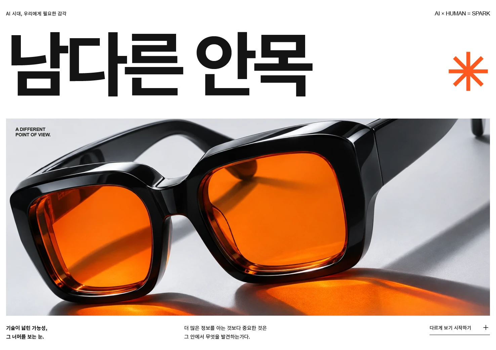
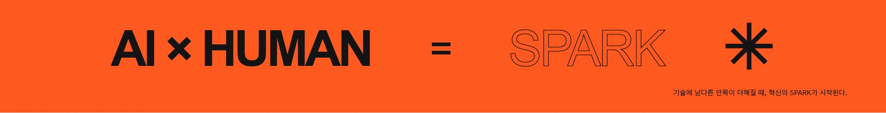
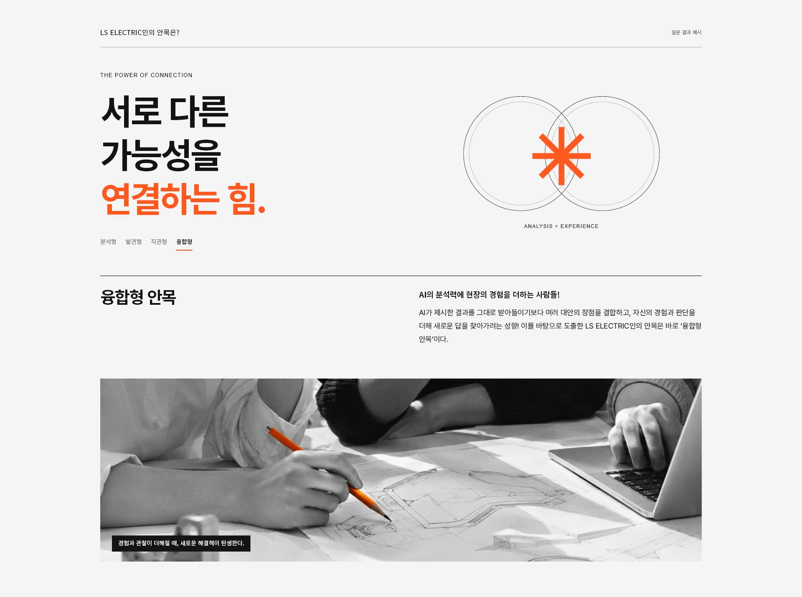
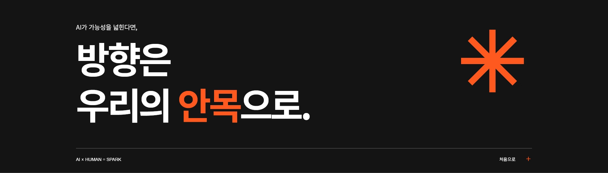
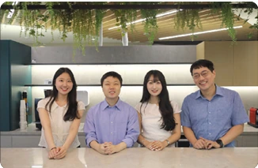
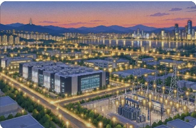

남다른 안목
THE HUMAN PERSPECTIVE
AI의 가능성에
인간의 안목을
더하다
AI × HUMAN =
SPARK✳
더 많은 답을 얻는 것보다 중요한 것은
어떤 답을 선택하는가다.
AI가 분석하고, 인간이 판단하고,
함께 새로운 가치를 만드는 시대.
AI에게 여행 계획을 짜달라고 해보자. 단 몇 초 만에 유명 관광지부터 맛집, 이동 동선까지 빈틈없는 일정표가 완성된다. 하지만 정작 여행에서 가장 오래 기억에 남는 곳은 계획에 없던 골목길의 작은 식당일지도, 우연히 만난 작은 플리마켓일지도 모른다. 수많은 정보를 분석하는 능력과 나에게 특별한 가치를 알아보는 능력은 다르기 때문이다.
일터에서도 마찬가지다. AI가 설비 데이터를 분석해 이상 징후를 찾아낸다. 그런데 오랫동안 현장을 지켜온 엔지니어는 평소와 미묘하게 다른 소리에서 문제의 단서를 발견할 수도 있다. 데이터가 보여주는 정보에 경험과 관찰이 더해질 때 새로운 해결책이 탄생하는 것이다.
〈트렌드 코리아 2027〉이 주목한 ‘안목자본’도 이러한 변화와 맞닿아 있다. AI가 수많은 결과물을 빠르게 만들어내는 시대, 중요한 것은 무엇을 더 많이 만들어내느냐보다 무엇이 진짜 가치 있는지 알아보는 능력이라는 것이다.
안목은 타고난 감각만이 아니다. 오래 보고, 경험하고, 비교하고, 때로는 실패하는 과정에서 길러지는 판단의 힘이다. 같은 것을 보더라도 남들이 놓친 가능성을 발견하고, 수많은 선택지 가운데 가장 적합한 답을 찾아내는 능력이다.
AI가 가능성을 넓힌다면 인간의 안목은 그 가능성에 방향을 부여한다. 그렇다면 LS ELECTRIC 임직원들의 남다른 안목은 어디에서 빛을 발할까? 우리의 선택과 경험 속에 숨어 있는 특별한 한 끗을 찾아보자.

A QUESTION OF PERSPECTIVE
당신의 안목은
어떤 스타일?
일상의 선택부터 AI와의 협업까지,
나만의 ‘보는 눈’ 분석
처음 가본 동네,
점심 메뉴를 고른다면?
지금 가장 마음이 가는 선택 하나.
- 데이터를 믿는다!
리뷰 1,000개, 평점 4.9점인 맛집
- 숨은 가치를 알아본다!
리뷰는 없지만 현지인들로 북적이는 식당
- 느낌이 온다!
간판과 메뉴판만 봐도 맛집인지 감이 오는 곳
- 새로운 경험이 좋다!
한 번도 먹어보지 못한 이색 메뉴가 있는 식당
1 / 4

융합형 안목
AI의 분석력에 현장의 경험을 더하는 사람들!
AI가 제시한 결과를 그대로 받아들이기보다 여러 대안의 장점을 결합하고, 자신의 경험과 판단을 더해 새로운 답을 찾아가려는 성향! 이를 바탕으로 도출한 LS ELECTRIC인의 안목은 바로 ‘융합형 안목’이다.
A SMALL SHIFT. A NEW PERSPECTIVE.
안목은 타고나는 게
아니라, 키우는 것.
거창한 공부나 특별한 경험이 필요한 것은 아니다. 평범한 일상에서 질문 하나를 바꾸고, 익숙한 것을 다르게 바라보는 작은 습관이 남다른 안목을 만든다.
다르게 보는 눈
점심 메이트
체인지
매일 같은 사람들과 같은 메뉴를 먹고 있다면 오늘은 다른 부서 동료에게 점심을 청해보자. 식사 중 딱 하나만 물어보면 된다.
“요즘 제일 골치 아픈 일이 뭐예요?”
우리 팀에서는 생각하지 못했던 고민이나 업무 방식에서 뜻밖의 아이디어를 발견할 수도 있다.
판단하는 눈
AI 반박
챌린지
AI가 작성한 보고서나 기획안이 꽤 그럴듯하다. 그대로 복사해서 제출하고 싶은 순간, 딱 한 번만 더 질문해보자.
“이 아이디어가 실패할 이유 세 가지만 찾아줘.”
AI가 제시한 약점을 검토하고 실제 업무에 해당하는 위험을 직접 판단해보는 것이다.
연결하는 눈
아이디어
이어달리기
동료가 내 생각과 다른 의견을 냈을 때, 곧바로 반박하고 싶어질 수 있다. 그럴 때 오늘은 말의 시작을 바꿔보자.
“그렇다면 여기에 이런 방법을 더해보면 어떨까요?”
서로 다른 생각을 연결하는 순간, 혼자서는 떠올리지 못했던 새로운 해결책이 탄생할 수 있다.

이 이야기의 키워드
이번 이야기는 어떠셨나요?
6DISCOVER

구자균 회장, “AI 전력난 해법은 지능형 DC 배전”
아시아 첫 CIRED 기조연설에서 지능형 DC 플랫폼의 미래를 소개합니다.

LS ELECTRIC의 역사를 가장 빠르게 살펴보는 법
LS ELECTRIC의 기업사를 6분으로 정리한 영상입니다.

숫자 너머의 시장을 읽고, 가격을 설계하다
사업총괄)마케팅팀 가격·데이터 Part